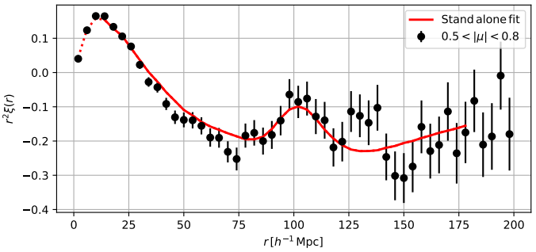
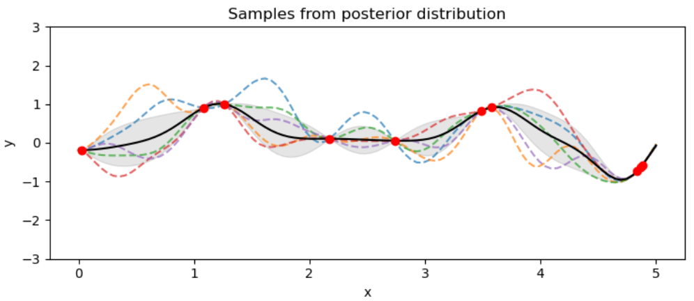

Research
Quantifying information in compressed analyses of BAO
Over the last decades, the ΛCDM model affirmed itself as a successful theory, able to descibe multiple cosmological observations while modelling the Universe's dynamics and structure with only six parameters. With the advance of technology and instrumental power, there has been a boost in the quality of the data, tightening the constraints on these parameters, urging for testing standard inference analyses against systematics and loss of information.
Amongst the diverse probes that can be used to constrain the ΛCDM parameters, there is the Baryonic Acoustic Oscillations (BAO) scale, which is detectable over different tracers of the matter density field. Among them, there is the Lyman-α Forest, which is a sequence of absorption lines in high-redshift quasar spectra, caused by the neutral hydrogen distributed along the line of sight, between the quasar and the observer. Check out this animation!
BAO produce a distinct peak feature in the correlation functions, as in the plot, which we can robustly use to probe the cosmological model. Standard analyses of the Lyman-α correlation functions only consider the information carried by that peak. In this paper we address whether this compression is sufficient to capture all the relevant cosmological information carried by these functions, while performing a full shape analysis.
Simulation-based inference applied to gravitational waves
When constraining the values of the ΛCDM parameters from observations, we rely on traditional Bayesian inference, which requires the likelihood function to be analytically known. The likelihood is the probability of the data given a parameter value and the larger the complexity of the problem the harder it is to compute this quantity accurately and fastly. In the case in which the likelihood evaluation is significantly harder to compute, we can completely bypass it by performing the inference in a framework in which the likelihood is never explicitly calculated, but instead fit using forward simulations of the data. This is simulation-based inference. A particular example is density-estimation SBI, in which a neural density estimators (NDEs) is trained to fit the joint parameter-data space. For more details, check out this paper!

Gravitational waves have proven to be powerful probes for tracing the evolution of the Universe expansion rate, but their constraining power is reliable provided the analysis is free from systematics, which could arise from selection effects. In the traditional Bayesian framework, accounting for these effects in the likelihood requires potentially costly and/or inaccurate processes. In this paper, we use density-estimation SBI, coupled to neural-network-based data compression, to infer cosmological parameters from a bayesian hierarchical model. We demonstrate that SBI yields statistically unbiased estimates of the cosmological parameters of interest.
Published on Physical Review D, 2021
Deepfakes

In recent year the diffusion of Machine-Learning had an incredible boost, reaching almost everyone: a well-known example are the social media tools which allow to swap your face with someone or something else. These are an example of deepfakes, which in general generate realistic synthetic images or masks representing our target in a new environment. Despite being funny when used to swap your face with your doggo, deepfakes pose a real thread as reported in numerous episodes, not limited to these. The substance behind these algorithms are Variational AutoEncoders, represented in this image.
In this project, done in collaboration with the NCC group, we analyse possible ways of recognizing deepfakes, mitigating the possible risks of fraud.
Online at NCC group webpage, 2020
Gaussian Processes
If case you don't know it already, our Universe is undergoing a phase of accelerated expansion! The physical mechanism that is causing it still poses an open question and we generarically refer to it as Dark Energy. According to the ΛCDM model mentioned above, this is driven by Einstein's Cosmological Constant Λ, which still raises theoretical questions that are far from clear. This, together with some tensions between different probes, largely motivated the investigation of alternative models.
Theory provides a vast amount of Dark Energy models, but as of now there is no reason why you should prefer one alternative model over the other. For this reason, we wish to place a constraint on Dark Energy in a model independent way. In particular, the dynamical contribution of the Dark Energy to the Universe expansion is encoded into its equation of state. Hence, we wish to treat it as a free a function of time and infer it from data in a non-parametric way. In this paper, we reconstructed the DE equation of state by assuming an underlying gaussian process, fitting discrete inferred points.